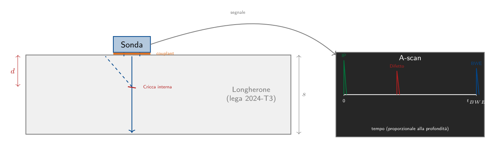
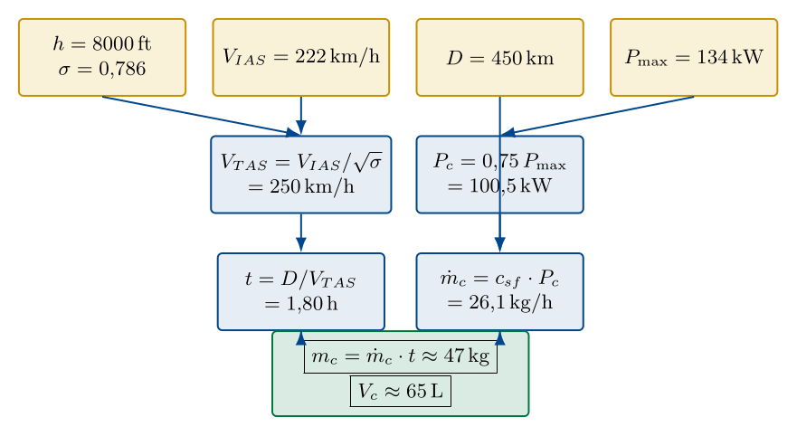
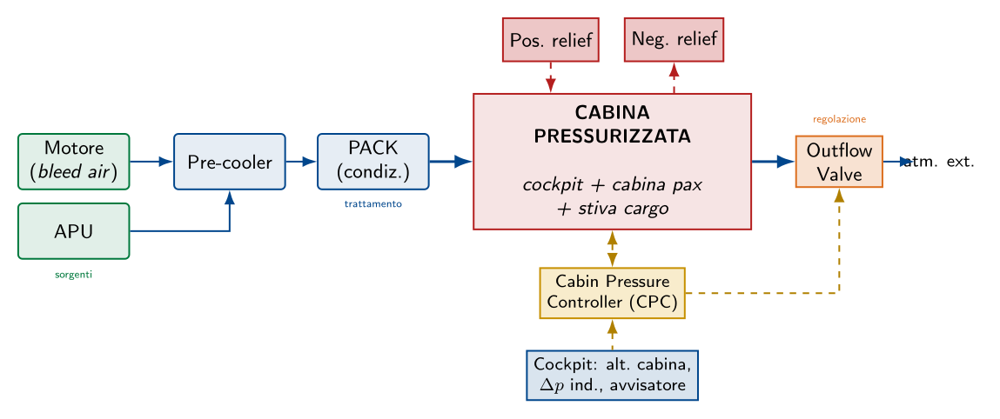
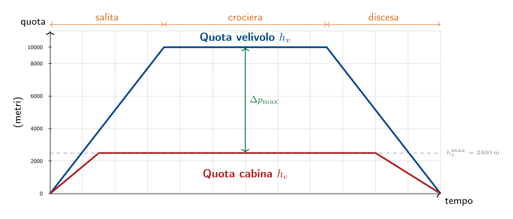
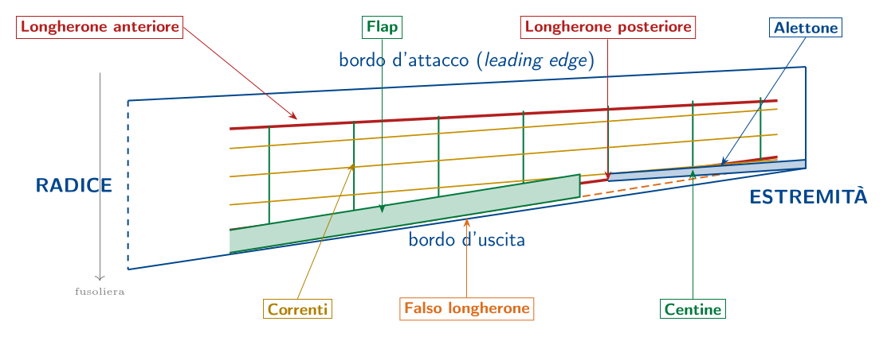

Esame di Stato 2016
Aliante · Materiali per costruzioni aeronautiche · Strumentazione
La prova del 2016, nella sua Seconda Parte, propone quattro quesiti che attraversano in maniera complementare quattro grandi aree del programma: la diagnostica strutturale mediante prove non distruttive, le prestazioni di volo con il calcolo del consumo di combustibile su una tratta assegnata, gli impianti di bordo con particolare riferimento alla pressurizzazione, e infine la costruzione della semiala con l'analisi delle funzioni di tutti gli elementi che la compongono. I quesiti 2 e 4 fanno esplicito riferimento al "velivolo della prima parte", ossia all'aeromobile per il quale, nel quesito 1 della prima parte, si è eseguito il dimensionamento di massima. Per coerenza con quanto svolto nel capitolo successivo di questo opuscoletto, nelle risposte che seguono il velivolo di riferimento è un monomotore da turismo a quattro posti di MTOW $\approx 1100\,\mathrm{kg}$ con motore Lycoming O-360 da 180 hp.
Prova non distruttiva su un componente strutturale: il controllo a ultrasuoni
Principio fisico del controllo a ultrasuoni
Gli ultrasuoni sono onde elastiche di compressione/dilatazione a frequenza superiore alla soglia di udibilità umana ($> 20\,\mathrm{kHz}$); nelle applicazioni aeronautiche si utilizzano frequenze comprese fra 0,5 MHz e 25 MHz. Il principio fisico è il seguente: un fascio di ultrasuoni, generato da un trasduttore piezoelettrico, viene inviato all'interno del materiale; quando l'onda incontra un'interfaccia (la superficie opposta del pezzo, oppure un difetto interno) viene parzialmente riflessa e parzialmente trasmessa, secondo le leggi dell'acustica. Il fascio riflesso (eco) ritorna al trasduttore, che lo riconverte in segnale elettrico; misurando il tempo di volo (time-of-flight) trascorso fra l'emissione e la ricezione e conoscendo la velocità del suono nel materiale ($v$), si determina la profondità del riflettore: $$d = \frac{v \cdot t}{2}$$ ove il fattore $1/2$ tiene conto del fatto che l'onda percorre due volte la distanza (andata e ritorno). Per le leghe di alluminio aeronautiche $v \approx 6300\,\mathrm{m/s}$.
Apparecchiatura necessaria
L'apparato strumentale per un controllo a ultrasuoni è costituito da:
- Trasduttore piezoelettrico (sonda): generalmente in titanato di bario o in PZT (piombo-zirconato-titanato), che si comporta sia da emettitore (sotto eccitazione elettrica genera onde meccaniche) sia da ricevitore (sotto sollecitazione meccanica genera segnale elettrico);
- liquido di accoppiamento (couplant): gel acquoso o olio sintetico interposto fra sonda e pezzo per garantire la continuità acustica eliminando l'aria nell'interfaccia, che altrimenti rifletterebbe il fascio;
- generatore di impulsi e ricevitore amplificato con visualizzatore;
- oscilloscopio o display A-scan che rappresenta in ascissa il tempo (proporzionale alla profondità) e in ordinata l'ampiezza dell'eco;
- blocchi di taratura di riferimento, contenenti difetti artificiali calibrati di geometria e dimensioni note, utilizzati per la calibrazione dell'apparecchiatura prima di ogni controllo.
Procedimento operativo
Si suppone di voler ispezionare un longherone alare in lega 2024-T3 a sezione a doppio T, per ricercare eventuali cricche di fatica nelle solette o nell'anima.
Passo 1 — Pulizia e preparazione della superficie.
La superficie del componente nella zona di scansione viene pulita da olio, grasso, vernice scrostata e ossidi superficiali, e levigata se necessario per garantire un buon contatto acustico fra la sonda e il pezzo.Passo 2 — Calibrazione dell'apparecchiatura.
Si esegue la calibrazione su un blocco campione dello stesso materiale del pezzo, di spessore e geometria noti, contenente riflettori artificiali calibrati (fori a fondo piatto, intagli a V). Si regolano:- la velocità del suono nel materiale (6300 m/s per la lega 2024);
- la base dei tempi dell'oscilloscopio in modo che lo schermo copra l'intero spessore del pezzo;
- il guadagno (gain) in modo che il riflettore di riferimento più piccolo dia un'eco di altezza nota (tipicamente 80 % dello schermo).
Passo 3 — Applicazione del couplant.
Sulla superficie da scansionare si applica un sottile strato uniforme di gel di accoppiamento, sufficiente a riempire ogni microrugosità interfacciale.Passo 4 — Scansione.
La sonda viene fatta scorrere sulla superficie del pezzo seguendo una griglia regolare (raster scan), con velocità di traslazione costante e leggera pressione di contatto. Sullo schermo dell'oscilloscopio si osservano simultaneamente:- l'eco di partenza (initial pulse, IP), generata dall'interfaccia sonda-pezzo, sempre presente all'origine dell'asse dei tempi;
- l'eco di fondo (back-wall echo, BWE), generata dalla superficie opposta del pezzo, posizionata a un tempo proporzionale al doppio dello spessore.
Passo 5 — Interpretazione e localizzazione dei difetti.
Ogni eco di difetto rilevata viene caratterizzata in:- posizione: misurata dal tempo di volo, fornisce la profondità $d = v \cdot t / 2$;
- ampiezza: confrontata con quella del riflettore di taratura, fornisce la dimensione equivalente del difetto;
- estensione: ricavata muovendo la sonda lungo le tre direzioni e annotando il perimetro entro cui l'eco persiste, fornisce la geometria del difetto.
Passo 6 — Documentazione.
Le indicazioni rilevate vengono mappate sul disegno del componente con coordinate $(x, y, z)$, fotografate e annotate in un rapporto di prova che riporta: identificativo del pezzo, sonda utilizzata (frequenza, diametro), couplant, parametri di calibrazione, indicazioni rilevate, giudizio di accettabilità rispetto ai criteri della specifica tecnica applicabile.Schema operativo

Vantaggi e limiti
| Vantaggi | Limiti |
| Rileva difetti interni, non solo superficiali, anche a grande profondità ($> 100\,\mathrm{mm}$). | Necessario il couplant: superfici scabrose, ossidate o verniciate richiedono preparazione. |
| Localizza la posizione del difetto in profondità con precisione. | Difficoltà nell'ispezione di geometrie complesse o di piccolo spessore. |
| Applicabile a tutti i materiali metallici e a molti compositi. | Richiede operatori certificati (livello II o III secondo EN ISO 9712) e interpretazione esperta. |
| Strumentazione portatile, applicabile in officina e in situ sul velivolo. | Difetti orientati parallelamente al fascio (lamellari) possono sfuggire alla rilevazione. |
| Consente la misura di spessori residui (utile per valutare la corrosione interna). | Interpretazione del segnale richiede esperienza per distinguere echi reali da artefatti. |
Calcolo del consumo per una tratta di 450 km a 8000 ft
Caratteristiche atmosferiche alla quota di crociera
La quota di volo assegnata, $h = 8000\,\mathrm{ft}$, corrisponde a $h \approx 2438\,\mathrm{m}$ in atmosfera standard ICAO. A questa quota, le caratteristiche dell'aria sono:
Velocità vera alla quota di crociera
Per il velivolo di riferimento (Cessna 172 / Piper PA-28 con motore Lycoming O-360 da 180 hp), la velocità indicata di crociera economica (IAS) al 75 % di potenza è dell'ordine di: $$V_{IAS} \approx 120\,\mathrm{kt} = 222\,\mathrm{km/h}$$ La velocità vera (TAS) si ricava dalla relazione fondamentale: $$V_{TAS} = \frac{V_{IAS}}{\sqrt{\sigma}}$$ Sostituendo: $$V_{TAS} = \frac{222}{0{,}8866} \approx 250\,\mathrm{km/h} \quad (135\,\mathrm{kt})$$
Tempo di volo
Per percorrere la distanza $D = 450\,\mathrm{km}$ alla velocità vera $V_{TAS}$: $$t = \frac{D}{V_{TAS}} = \frac{450}{250} = 1{,}80\,\mathrm{h} \quad (1\,\mathrm{h}\,48\,\mathrm{min})$$
Calcolo del consumo di combustibile
Potenza in crociera.
Al 75 % della potenza massima (134 kW): $$P_c = 0{,}75 \cdot P_{\max} = 0{,}75 \cdot 134 = 100{,}5\,\mathrm{kW}$$Consumo orario.
Con consumo specifico al freno tipico per motori boxer aspirati ($c_{sf} = 0{,}26\,\mathrm{kg/kW/h}$): $$\dot{m}_c = c_{sf} \cdot P_c = 0{,}26 \cdot 100{,}5 \approx 26{,}1\,\mathrm{kg/h}$$Massa di combustibile per la tratta.
$$\boxed{\,m_c = \dot{m}_c \cdot t = 26{,}1 \cdot 1{,}80 \approx 47\,\mathrm{kg}\,}$$Volume di combustibile.
Considerando la densità dell'avgas 100 LL a $15\,\mathrm{°}\mathrm{C}$ ($\rho_c = 0{,}72\,\mathrm{kg/L}$): $$\boxed{\,V_c = \frac{m_c}{\rho_c} = \frac{47}{0{,}72} \approx 65\,\mathrm{L}\,}$$Sintesi della catena di calcolo

Impianto di pressurizzazione di un velivolo commerciale
Filosofia di pressurizzazione
Per ragioni strutturali (peso della fusoliera) ed economiche (consumo di aria spillata), la pressione interna non viene mantenuta costante al valore del livello del mare per tutta la durata del volo: si stabilisce un compromesso fra il comfort dei passeggeri e il dimensionamento della fusoliera. La filosofia tipica per i velivoli da trasporto è la seguente:
- da 0 \mathrm{} a circa 2500 m (8000 ft) la pressione interna eguaglia quella esterna (fase di non pressurizzazione);
- da 2500 m a circa 8000 m la pressione interna viene mantenuta costante al valore corrispondente a 2500 m (765 hectoPa) — è la fase isobarica;
- oltre 8000 m si mantiene costante il differenziale di pressione $\Delta p = p_{cab} - p_{ext}$ al valore massimo strutturale, e la pressione cabina diminuisce con la stessa legge di quella esterna.
Il valore standard del differenziale di pressione massimo per un velivolo da trasporto passeggeri è $\Delta p_{\max} \approx 7{,}5\,\mathrm{psi}$ ($\approx 52\,\mathrm{kPa}$), che corrisponde alla differenza fra la pressione a 11000 m (limite superiore della quota di volo) e quella a 2400 m (massima quota cabina). La struttura della fusoliera viene dimensionata su questo valore, con un opportuno coefficiente di sicurezza ($\sim 1{,}33$ secondo le FAR/CS-25).
Architettura dell'impianto
L'impianto di pressurizzazione è strutturalmente integrato con l'impianto pneumatico e l'impianto di condizionamento, dei quali costituisce un'estensione. I componenti principali sono:
- Sorgente di aria compressa (bleed air)
- L'aria viene prelevata dagli stadi intermedi del compressore dei motori (turbofan) tipicamente ad alta temperatura ($\sim 200\,\mathrm{°}\mathrm{C}$) e pressione ($\sim 30\,\mathrm{psi}$). In emergenza o a terra, la sorgente è l'APU. Una bleed valve controllata elettronicamente regola la portata.
- Pre-cooler
- Scambiatore di calore aria-aria che raffredda preventivamente l'aria spillata utilizzando come fluido refrigerante l'aria atmosferica catturata dalla presa dinamica della gondola motore.
- Pack (Air Conditioning Pack)
- Gruppo di condizionamento composto da uno scambiatore di calore primario, un compressore, un secondo scambiatore di calore, una turbina di espansione (air cycle machine, ACM) e un separatore d'acqua. È un ciclo termodinamico inverso che fornisce aria alla giusta temperatura e umidità.
- Cabina pressurizzata
- È la regione strutturale a tenuta stagna che comprende cockpit, cabina passeggeri, stive cargo e relativi vani di servizio. Il vano carrello anteriore non è pressurizzato.
- Outflow Valve (valvola di efflusso)
- È il cuore del sistema di regolazione: una valvola a sezione variabile, posta sulla parte posteriore della fusoliera, che scarica aria all'esterno modulando la sezione di passaggio. È la portata di efflusso a determinare la pressione interna a parità di portata in ingresso.
- Cabin Pressure Controller (CPC)
- Centralina elettronica che, sulla base della quota di volo, della quota cabina pianificata e dei gradienti ammissibili, comanda automaticamente l'apertura e la chiusura della outflow valve.
- Positive Pressure Relief Valve
- Valvola di sicurezza in sovrapressione: si apre se $\Delta p > \Delta p_{\max}$ per evitare di superare i limiti strutturali.
- Negative Pressure Relief Valve
- Valvola anti-vuoto: si apre se la pressione esterna supera quella interna (caso possibile in discesa rapida non regolata) per evitare carichi di compressione sulla fusoliera, che sarebbero non previsti dalla progettazione.
- Strumentazione di cockpit
- Altimetro di cabina (cabin altimeter), variometro di cabina (cabin VSI), indicatore di pressione differenziale ($\Delta p$ indicator), avvisatore acustico-luminoso che si attiva se la quota cabina supera 10000 ft.
Schema funzionale

Andamento della pressurizzazione durante la missione
Durante una tipica missione di volo (decollo, salita, crociera, discesa, atterraggio), la pressione cabina segue un profilo significativamente diverso da quello della pressione esterna, come illustrato dal diagramma seguente.

Funzioni degli elementi costruttivi della semiala
Schema di riferimento della semiala

Tabella riassuntiva delle funzioni
Nella tabella seguente sono elencati tutti gli elementi costruttivi della semiala, con l'indicazione delle funzioni svolte: $\bullet$ funzione principale, $\circ$ funzione secondaria.
| lcccX@{}}
Elemento | Strutt. | Aerod. | Funz. | Note |
| Longherone anteriore | $\bullet$ | – | – | Trave principale, assorbe flessione e taglio. |
| Longherone posteriore | $\bullet$ | – | $\circ$ | Anche supporto attacco superfici mobili. |
| Falso longherone | $\circ$ | – | $\bullet$ | Supporto attacco alettoni, flap, aerofreni. |
| Centine | $\bullet$ | $\circ$ | $\circ$ | Mantengono il profilo, ripartiscono i carichi. |
| Correnti | $\bullet$ | – | – | Irrigidiscono il rivestimento, integrano la flessione. |
| Rivestimento (skin) | $\bullet$ | $\bullet$ | – | Profilo aerodinamico + flusso di taglio. |
| Bordo d'attacco (D-nose) | $\circ$ | $\bullet$ | – | Forma aerodinamica, può alloggiare anti-ice. |
| Bordo d'uscita | – | $\bullet$ | $\circ$ | Chiusura aerodinamica, attacco superfici mobili. |
| Alettone | – | $\bullet$ | $\bullet$ | Controllo asse di rollio. |
| Flap | – | $\bullet$ | $\bullet$ | Ipersostentatore B/U: aumenta $C_{L,\max}$ in atterraggio. |
| Slat (eventuale) | – | $\bullet$ | $\bullet$ | Ipersostentatore B/A: ritarda lo stallo. |
| Spoiler / aerofreno | – | $\bullet$ | $\bullet$ | Lift dumper a terra, aerofreno in volo. |
| Winglet | – | $\bullet$ | – | Riduce la resistenza indotta. |
| Centine di compartimento | $\bullet$ | – | $\bullet$ | Chiudono i serbatoi integrali a tenuta stagna. |
| Attacchi (fittings) | $\bullet$ | – | $\bullet$ | Trasmettono i carichi alla fusoliera. |
Descrizione dettagliata
Longheroni (anteriore e posteriore).
Funzione strutturale primaria. Costituiscono la spina dorsale della semiala e sono assimilabili a travi a mensola incastrate in fusoliera. L'anima (lamiera verticale) assorbe le tensioni tangenziali dovute al taglio; le solette (suole estruse di sezione rettangolare o a L) assorbono il momento flettente come coppia di forze: la soletta superiore in compressione, la soletta inferiore in trazione (in volo diritto). Nelle ali bilongherone i due longheroni, insieme al rivestimento, formano il cassone alare, struttura tubolare chiusa molto rigida sia a flessione sia a torsione.Falso longherone.
Funzione funzionale primaria. È un longherone secondario, posto verso il bordo d'uscita, che non ha un compito strutturale prevalente ma serve da supporto per gli attacchi delle superfici mobili (alettoni, flap, freni aerodinamici). Nelle ali monolongherone è anche detto "longherone secondario".Centine.
Funzione strutturale + aerodinamica + funzionale. Sono gli elementi trasversali, sagomati secondo il profilo aerodinamico, distribuiti lungo l'apertura alare. Svolgono molteplici compiti:- mantengono la sagoma aerodinamica del profilo, contrastando la deformazione del rivestimento sotto i carichi locali;
- ripartiscono i carichi concentrati (peso del motore, attacchi del carrello, attacchi delle superfici mobili) verso longheroni e correnti;
- collegano fra loro i correnti, evitandone l'instabilità laterale.
Correnti.
Funzione strutturale primaria. Sono profilati longitudinali a sezione ridotta (a Z, a C, a L, a T) interposti fra le solette dei longheroni. Hanno due compiti principali:- integrare la resistenza a flessione delle solette, distribuendo gli sforzi assiali su un'area più ampia;
- irrigidire il rivestimento prevenendone l'instabilità per imbozzamento (skin buckling) sotto i carichi di compressione.
Rivestimento (skin).
Funzione strutturale + aerodinamica. È la lamiera esterna (in lega di alluminio 2024 placcata o 7075) che riveste l'intera semiala. Quando partecipa attivamente all'assorbimento di taglio, torsione e flessione si dice lavorante; quando svolge solo funzione aerodinamica (di forma) si dice di forma. Le sue funzioni sono:- creare la barriera fra il flusso in depressione del dorso e quello in sovrappressione del ventre (genesi della portanza);
- assorbire il flusso di taglio dovuto al momento torcente (cassone alare);
- collaborare con i correnti nell'assorbimento della flessione mediante l'area collaborante;
- proteggere l'interno dell'ala dagli agenti atmosferici e dalla corrosione.
Bordo d'attacco (D-nose).
Funzione aerodinamica primaria, strutturale secondaria. È la parte anteriore del profilo, generalmente di forma a D, smontabile per accedere agli impianti interni. Nelle ali monolongherone è anche l'unica parte resistente a torsione (torsion box anteriore). Frequentemente al suo interno passano le tubazioni dell'impianto antighiaccio (aria calda spillata dal motore) o le resistenze di un sistema antighiaccio elettrico.Bordo d'uscita.
Funzione aerodinamica primaria. È la parte posteriore del profilo, di forma affilata, dove le velocità superiore e inferiore si ricongiungono determinando la circolazione e quindi la portanza (condizione di Kutta). Costituisce inoltre la zona di attacco delle superfici mobili.Alettoni.
Funzione aerodinamica + funzionale. Sono superfici mobili poste al bordo d'uscita, in prossimità delle estremità alari. Si muovono in modo differenziale (alettone destro su, alettone sinistro giù, e viceversa) per generare un momento di rollio. Vengono posizionati lontano dalla mezzeria per massimizzare il braccio rispetto all'asse di rollio.Flap (ipersostentatori di bordo d'uscita).
Funzione aerodinamica + funzionale. Sono superfici mobili al bordo d'uscita, poste nella zona interna della semiala (tra la radice e l'alettone). La loro deflessione verso il basso aumenta la curvatura del profilo e, nei tipi più sofisticati (Fowler, slotted), anche la corda effettiva, incrementando il coefficiente di portanza massimo $C_{L,\max}$ e abbassando la velocità di stallo: ciò consente decolli e atterraggi a velocità inferiori.Slat o lamelle (ipersostentatori di bordo d'attacco).
Funzione aerodinamica + funzionale. Sono lamine mobili poste al bordo d'attacco, presenti soprattutto nei velivoli ad alte prestazioni. La loro estensione apre una fessura attraverso cui l'aria del ventre passa al dorso, energizzando lo strato limite e ritardando lo stallo a incidenze elevate.Spoiler / aerofreni.
Funzione aerodinamica + funzionale. Sono pannelli mobili dorsali che si sollevano per:- distruggere la portanza dopo l'atterraggio (lift dumpers), aumentando l'aderenza delle ruote al suolo e consentendo l'uso efficace dei freni;
- aumentare la resistenza in volo per rallentare o scendere senza accelerare (speed brakes);
- assistere gli alettoni nel controllo di rollio ad alta velocità (roll spoilers).
Winglet.
Funzione aerodinamica. È un'estensione verticale o angolata dell'estremità alare. Sfrutta il flusso longitudinale che si genera all'estremità per via della circolazione attorno al wing tip per produrre una piccola portanza orizzontale e ridurre l'intensità dei vortici di estremità, abbassando così la resistenza indotta. Equivale, in termini di efficienza, a un aumento dell'allungamento alare senza incremento dell'apertura.Centine di compartimentazione e attacchi.
Funzione strutturale + funzionale. Sono elementi specializzati: le centine di compartimentazione separano i serbatoi integrali del cassone in vani stagni, evitando il movimento longitudinale del combustibile (sloshing) e permettendo la gestione del centraggio. Gli attacchi (fittings, in lega di alluminio fusa o forgiata, talvolta in acciaio o titanio) sono nodi rinforzati che concentrano e trasmettono i carichi della semiala alla fusoliera, attraverso bulloneria di forza.